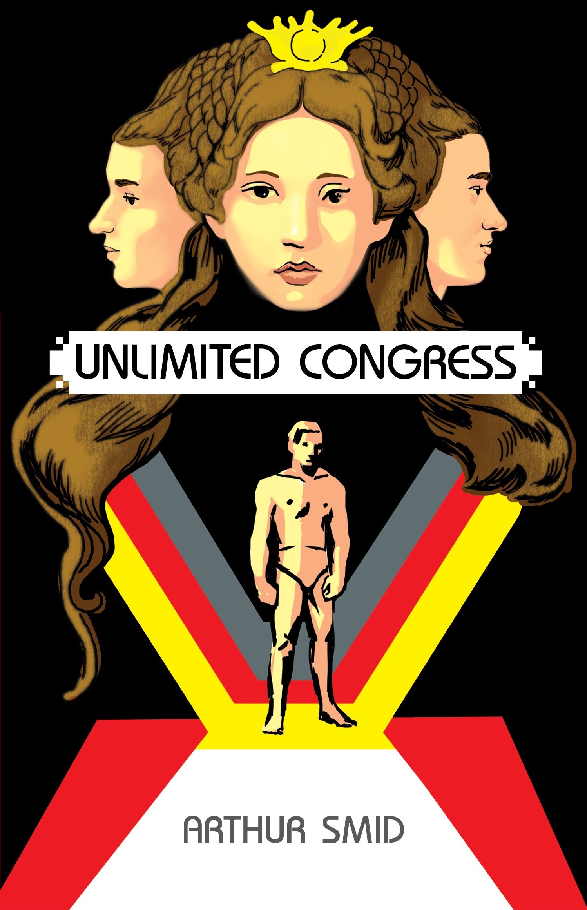

Boy on Crown Hill
Available from Amazon Paperback, Kindle, Kobo, Smashwords

It's December of 1976, Mason Klegg has almost finished his first term as a freshman in high school, in a new town, in the Deep South. An orphan, Mason must conform to the demands of a violent uncle, while also being targeted for abuse at school. He seeks help from a judge, and as Mason starts working to gain emancipation, the judge recruits him to spy on the son of a charismatic preacher and leader of the African American community. In a town divided by race, Mason soon discovers abuse is a feature of American power, and a force he must confront to become a man.
Unlimited Congress
Available May 25, 2018

Malik Adam is a senator in a military empire that maintains order in society through fear and theatrical violence. Only men are in the Senate, their bodies artificially enhanced by competing pharmaceutical and technology companies. A stalled decision, or the need to rally the public, can bring two senators to sacred ground where only one will survive. Trained by his father to be a killer on the senate floor, Malik balks when his opponent is his own brother. Their parents' political ambitions bring the brothers into a conflict that forces Malik to question the source of his authority. Monopoly of violence. Collusion of industry. Control of money. Living under constant threat and surveillance keeps citizens dependent upon a brutal power to meet their daily needs. Unlimited Congress illuminates the dark story of a totalitarian state and the people who risk their lives for a true democracy.
Working title: Citizen
Publication date to be announced in 2018
Shane is the new hire at a software company making tools to concentrate wealth and the company’s embrace of militarized hoarding freaks him out. He wants to invest in making civilization work for all and starts a company with the mission to help people self-organize and be universally employed and effective. They build a massive job-matching platform for online labor where incentives and penalties align to create value and distribute it fairly. But their platform must withstand the competition—and it's ruthless. Pundits are trying to discredit Shane as he fights to create the world's biggest platform.